Ouvert: 9h00 - 17h00
+216 71897716


Partez à la rencontre
de nos animaux 🐾
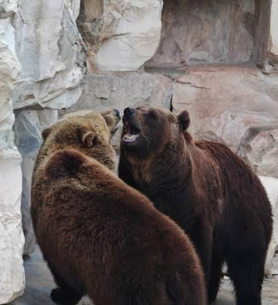
L’ours est un grand animal fort et poilu . Il vit dans les forêts, les montagnes ou les régions très froides. Il aime manger des fruits, du miel et parfois du poisson.
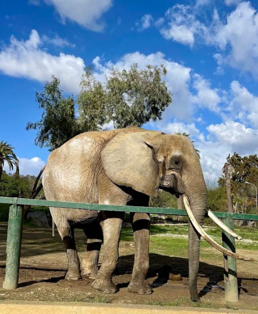
L’éléphant est le plus grand animal terrestre. Il possède une longue trompe qui lui sert à respirer, manger et boire. Très intelligent, il vit en troupeau et montre une grande solidarité.
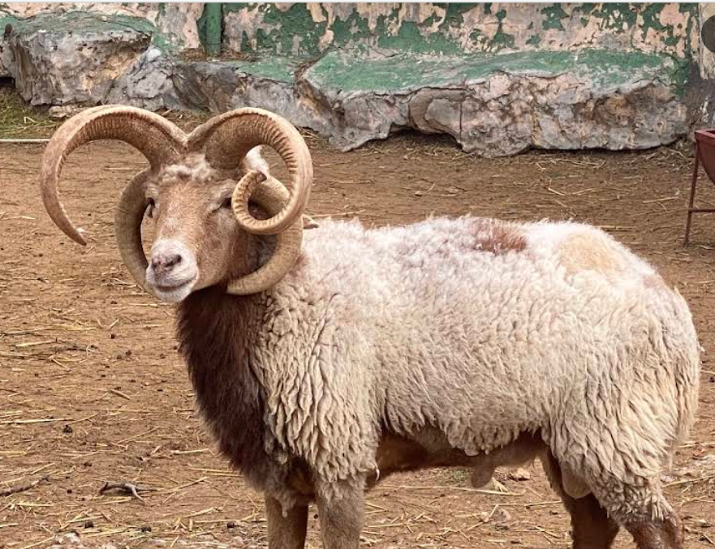
Ce type de mouton s’appelle le mouton Jacob. Il est facile à reconnaître grâce à ses cornes qui poussent par paires. Comme les autres moutons, il aime vivre dans les champs et manger de l’herbe. Il a aussi une belle laine épaisse.

Le singe est un mammifère primate vivant principalement dans les forêts tropicales et subtropicales. Très intelligent, il utilise parfois des outils, comme des bâtons pour attraper des insectes ou casser des noix .
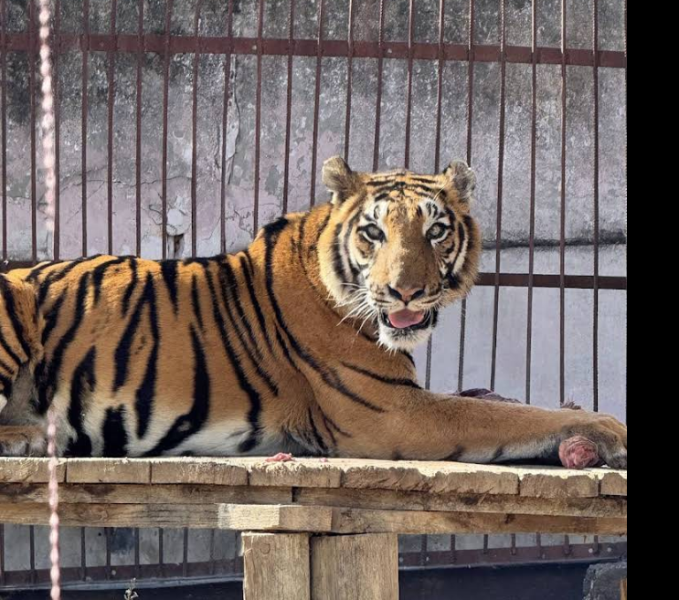
Le tigre est un grand félin reconnaissable à ses rayures noires sur fond orange. Il vit en Asie et est un chasseur solitaire très puissant.
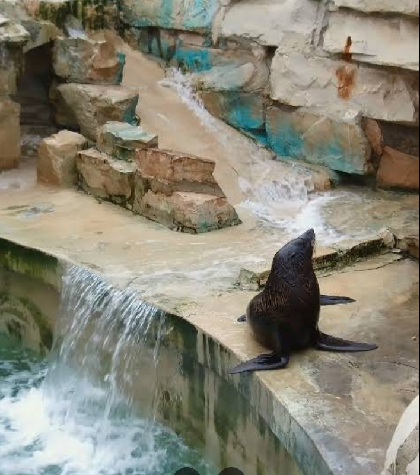
Le phoque est un mammifère marin qui vit dans les régions froides et tempérées. Il est excellent nageur et se nourrit principalement de poissons et de crustacés .
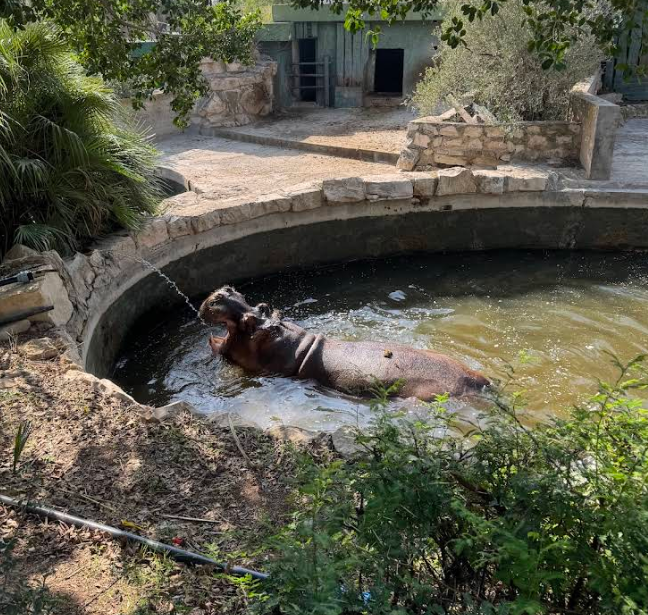
L’hippopotame est un grand mammifère semi-aquatique vivant principalement dans les rivières et lacs d’Afrique subsaharienne . Il passe la majeure partie de la journée dans l’eau pour garder sa peau humide et se protéger du soleil .
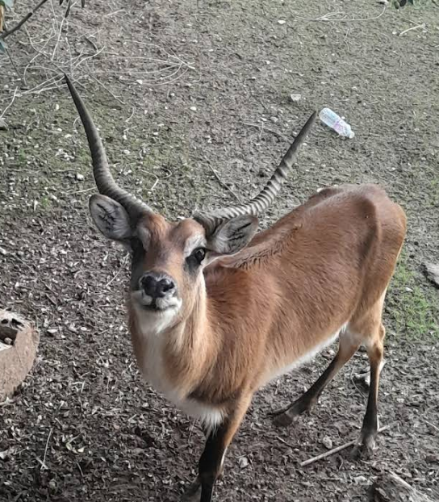
La gazelle est un herbivore gracieux vivant principalement dans les savanes et déserts d’Afrique et d’Asie. 🌾 Elle se distingue par sa rapidité et son agilité, pouvant atteindre des vitesses de 80 km/h pour échapper aux prédateurs.
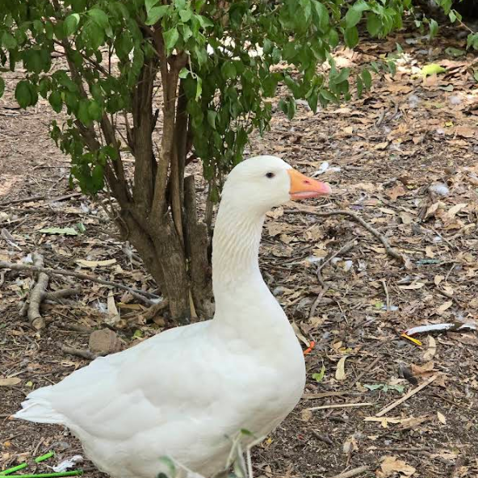
L’oie est un oiseau aquatique souvent domestiqué ou vivant à l’état sauvage. Elle se nourrit principalement de plantes, d’herbes et de graines .
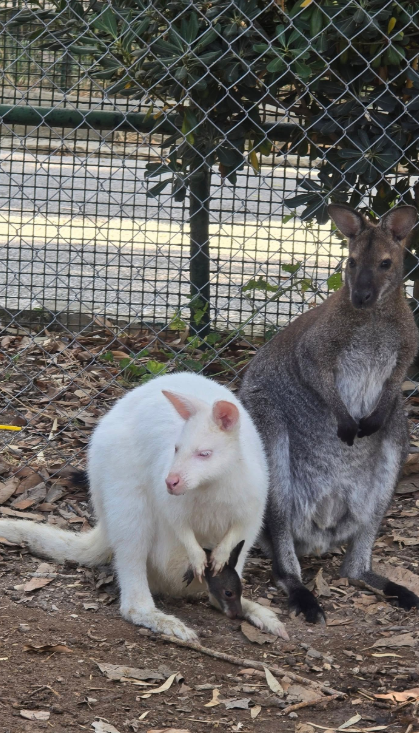
Le kangourou est un marsupial australien célèbre pour ses sauts puissants et sa poche ventrale où il porte ses petits, appelés joeys. Il se nourrit principalement de feuilles, herbes et fruits.
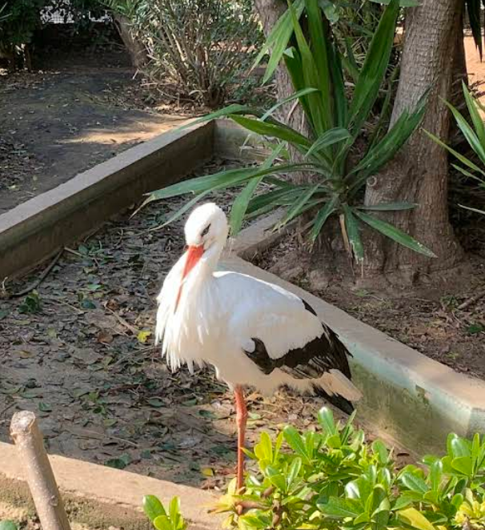
La cigogne est un grand oiseau migrateur, célèbre pour sa silhouette élégante et son long bec. Elle vit principalement dans les zones humides, les rivières et les marais .Les cigognes se nourrissent de petits poissons, insectes, grenouilles et autres petits animaux aquatiques.
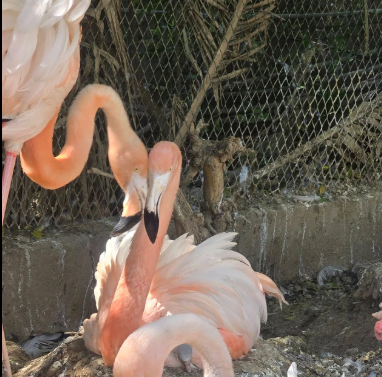
Le flamant rose est un oiseau élégant connu pour ses longues pattes fines et son plumage rose vif. Les flamants se nourrissent de petits crustacés et algues, dont les pigments rouges leur donnent leur couleur caractéristique.